Two X-rays
→ a 3D pelvis
What we built, the data we trained on, and how well it recovers bones it has never seen: test Dice 0.815 on 55 pelvises.
Input: a front and a side X-ray. Output: 64³ voxels of bone.
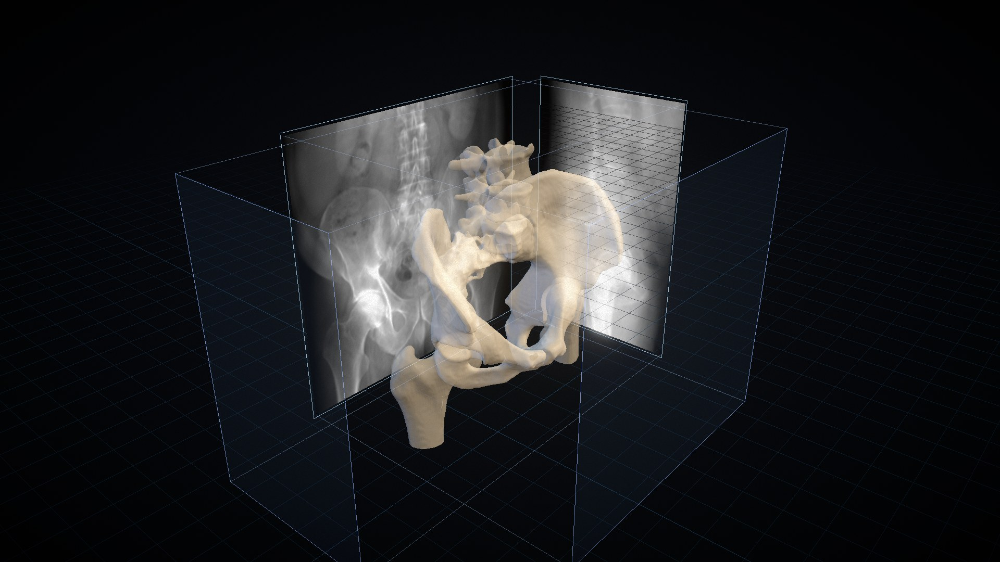
- X-rays rendered from real CT with DiffDRR: perspective, 128 × 128, source 750 mm from the pelvis.
- Target: the pelvis mask (both hips + sacrum) in a 320 mm cube, 5 mm voxels.
- Score: Dice (overlap) and HD95 (surface distance) on patients the network never saw.
- Because the X-rays come from CT, the true 3D answer is always known.
1,228 CT scans in. 264 usable pelvises out.
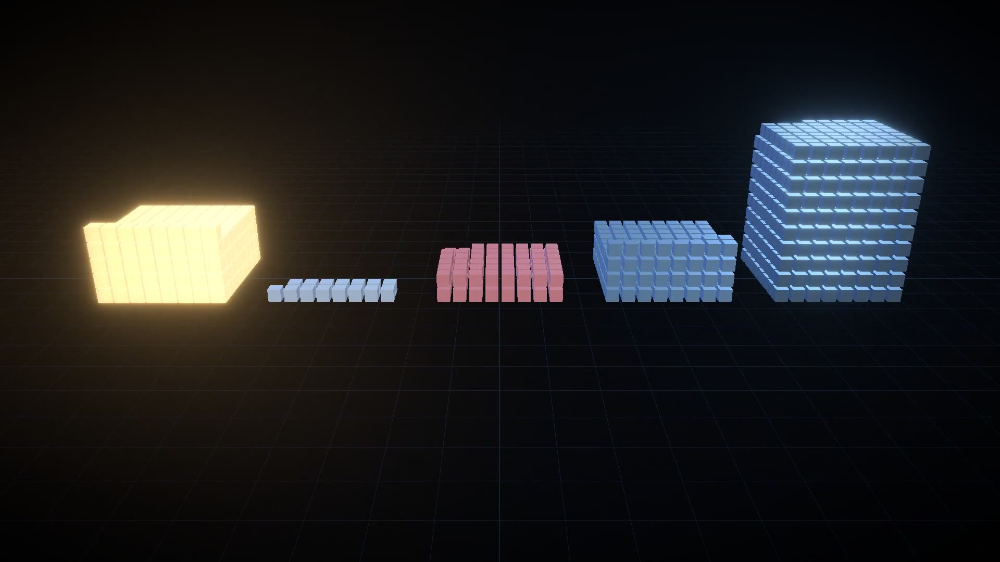
Every rule protects the ground truth.
| Rule | Scans | Why it has to go |
|---|---|---|
| A pelvis bone is missing | 637 | The scan is of the chest, head or upper abdomen. No pelvis, no target. |
| Pelvis cut by the scan | 202 | The mask stops at the scan's edge. The network would be marked wrong for drawing bone that really exists. |
| Metal | 110 | Implants corrupt the CT, and the X-rays would show metal that the bone mask doesn't. Kept out of val and test; see the note on the training set. |
| Wider than the cube | 15 | The 320 mm cube is fixed. A pelvis that doesn't fit would be cut. |
| Usable | 264 | Screened before splitting, then split by patient: 179 train · 30 val · 55 test. |
Screening is automatic and logged per scan (screening.json). Streaming the 23.6 GB archive subject by subject took about 2 h.
179 pelvises, stretched to 820 training samples.
- Re-posed copies: CT and mask rotated together (tilt ±12°, obliquity ±6°, rotation ±10°, scale 0.95–1.05), X-rays rendered again. Exact for both views.
- Mirror left ↔ right with p = 0.5, on the fly.
- Not used: 343 copies of the 76 metal patients. A filter in the data loader skipped them without warning. Found after the runs, fixed next.
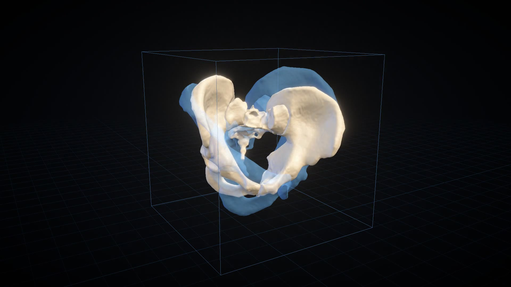
re-posed copies · the same pelvis, new posesEncode each X-ray in 2D, lift it into 3D, decode the bone.
DRR images
conv blocks
back along its ray
two volumes
skip connections
per voxel
Adam, lr 10⁻³, batch 8, dropout 0.1, intensity augmentation. Best checkpoint chosen on the 30 validation pelvises; the 55 test pelvises are scored once, at the end.
Two 2D encoders read the X-rays. A 3D decoder builds the bone.
The final network (2 views, perspective lift), drawn from its code. Labels are channels × size. Height grows with image size, thickness with channels (log scale). Output: its prediction for the median test patient, s0252, from the two X-rays shown.
The loss fell to zero. The validation Dice didn't move.
- On the 27-scan local subset: 14 train, 4 val, 9 test.
- Training loss 0.41 → 0.035, val Dice flat at 0.72 from step 500: it memorised its 14 pelvises.
- Same network on 179 pelvises: the val Dice keeps rising. Test Dice 0.62 → 0.76.
Lesson that held all project: data beats tuning.
Test Dice from 0.62 to 0.815, one change at a time.
Test Dice on the 55 test pelvises (the first run: its 9 local test pelvises). Ensembles average the networks' probabilities, threshold chosen on validation.
The side X-ray is worth +0.045 Dice, for 51 of 55 patients.
- Same network, data, steps and seeds. Only the number of views changes. 3 seeds per arm.
- Paired by patient, 95% CI by bootstrap over the 55 test patients: [+0.023, +0.062].
- Surprise: with one view and no position input the network can't learn at all (Dice 0.335). The lift copies each pixel along its whole ray, so nothing says where along it a voxel is. Adding voxel coordinates (CoordConv) fixed it.
What we tried that didn't help.
| Change | Before | After | Why not |
|---|---|---|---|
| Cosine learning-rate decay | 0.757 | 0.757 | Fit the training set better, the test set no better |
| Twice as many steps (20k) | 0.799 | 0.800 | The curve had already flattened |
| Weight decay 0.05 | 0.757 | 0.763 | Within the seed-to-seed noise |
| CoordConv with two views | 0.757 | 0.758 | The side view already gives depth |
| Keep the largest piece only | 0.776 | 0.776 | The networks rarely leave stray specks |
Seed noise is ±0.005, so any single-run difference under ~0.01 is not a result.
What is holding the Dice back?
Dice of a perfect pelvis shifted by one 5 mm voxel. 61% of pelvis voxels are on the surface.
Train / val / test Dice of one network. A 0.10 gap: it partly memorises its 179 pelvises.
Outliers (0.39, 0.52); everyone else is above 0.72. The worst is a very large patient: the body is wider than the side detector.
The lift reads the X-ray this far, on average, from where each voxel's ray really lands (52 mm at the 95th percentile).
A and C are limits of the grid and the data. D is a bug in the method, so we fixed it.
X-rays fan out from a point. The old lift assumed they were parallel.
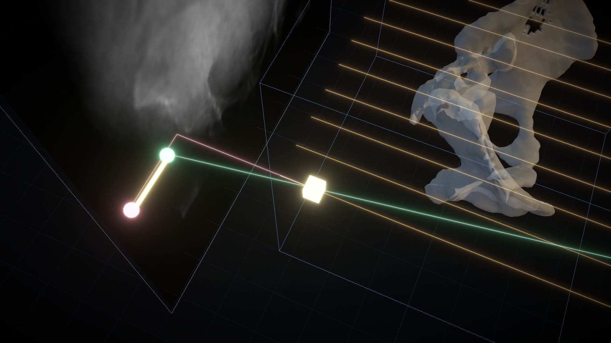
top view · real geometry- Blue: the real rays, source → detector. Magnification goes from 1.12× at the back of the cube to 1.73× at the front.
- Orange: the old lift, one straight line per pixel. Right only at one depth.
- Method B: project every voxel centre through the real camera (K, R, t), divide by depth, read the feature map there. The pinhole model from weeks 9–10, inside the network.
- Check: silhouettes lifted back and intersected contain 67–74% of the pelvis (old) vs 100% (new).
The fix helps: +0.007 Dice, and the CI excludes zero.
| A · parallel | B · perspective | |
|---|---|---|
| 3 single networks | 0.797 | 0.804 |
| Ensemble of 3 | 0.808 | 0.815 |
| B − A, 95% CI | +0.007 [+0.003, +0.011] | |
| Patients B better | 33 of 55 | |
Real, but small: a quarter of the gain the extra data gave. The network had largely learned to undo the old error with its convolutions.
Two X-rays in, a 3D pelvis out.
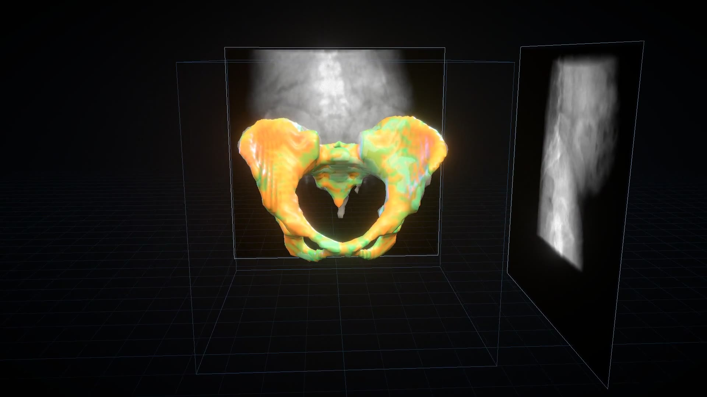
median test patient · s0252(ensemble of 3)
(≈ 1.4 voxels)
Dice 0.70
Dice
Most errors are within one voxel. The worst is a data problem.
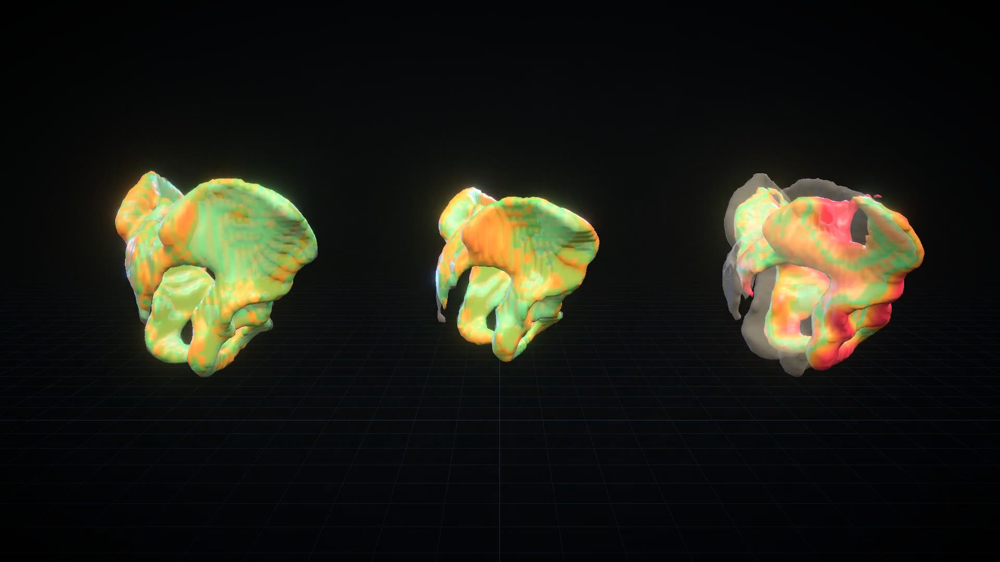
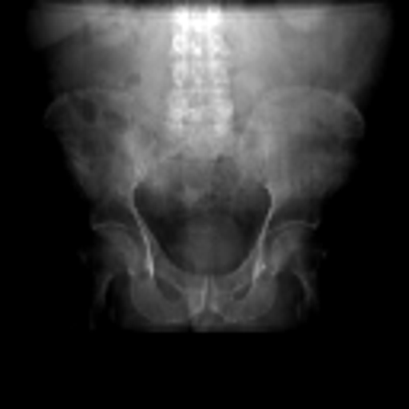
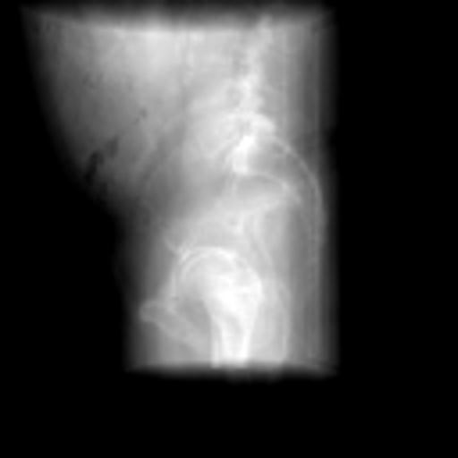
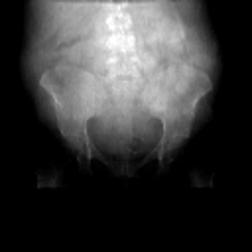
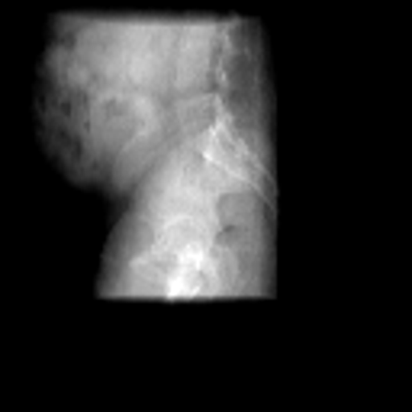
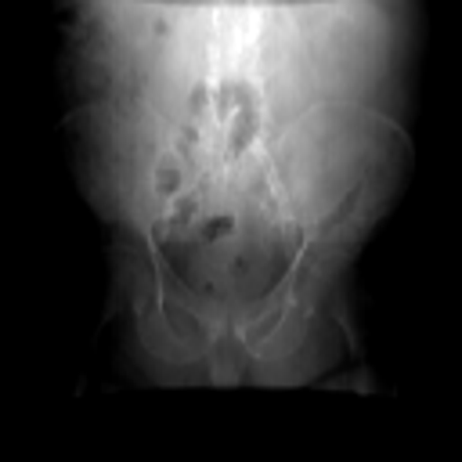
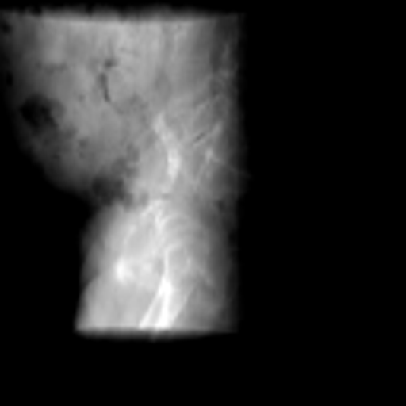
Colour: distance from the predicted surface to the true one (green 0, orange 5 mm, red ≥ 15 mm). Grey ghost: the true pelvis. Inputs below each: its AP and lateral X-ray.
The network beats copying the most similar pelvis by +0.25 Dice.
Baselines from the proposal: 27 clean scans of the local subset, leave-one-out, 64³ grid. Network: the 55 test pelvises of the full dataset (different patients, same grid and metric). Each dot is one test patient. The published value is on different data and is a direction, not a comparison.
Done, not done, and what we'd do next.
- Full screening of 1,228 scans
- Baselines: hull, NN, oracle
- Network, 5 training rounds
- 1 vs 2 views, 3 seeds, paired CI
- Perspective lift, 0.815
- Real X-rays: the DeepFluoro sim-to-real gap
- The clinical angle (CE) vs Dice
- The 76 metal patients (loader bug)
- Train with the metal patients: +76 pelvises
- Finer grid (2.5 mm) to break the one-voxel ceiling
- More large patients, for cases like s1326
- Data: 1,228 CT scans screened, 264 usable, 179 for training.
- Result: test Dice 0.815, HD95 7.1 mm, vs 0.57 for nearest neighbour.
- Biggest lever: more and more varied data, every round.
- Method fix: perspective lift, +0.007 with a CI that excludes zero.
Questions?
Data: TotalSegmentator v2.0.1 (Wasserthal et al. 2023), CC BY 4.0